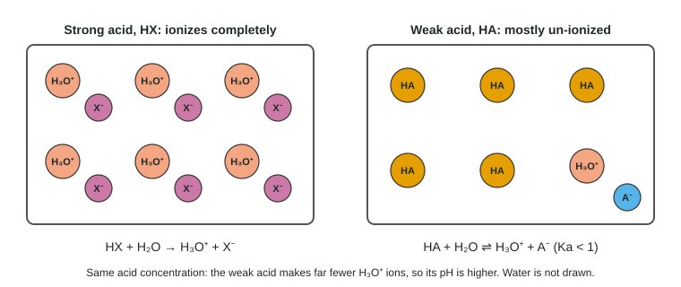

Most acids are not strong. Acetic acid in vinegar, citric acid in lemons and carbonic acid in soda water all give up their protons only partly, and so do the bases in household ammonia and in baking soda solution. Their pH comes from an equilibrium, which is why this topic leans on the ICE tables from Unit 7. Once the method clicks, it is the same few lines every time.
Weak means partly ionized
A weak acid HA reacts with water reversibly:
HA(aq) + H₂O(l) ⇌ H₃O⁺(aq) + A⁻(aq) Ka = [H₃O⁺][A⁻] / [HA]
Ka, the acid dissociation constant, is just K for this reaction (water, the solvent, is left out). For a weak acid Ka is much less than 1, so at equilibrium most of the acid is still HA. In 0.10 M acetic acid only about 1 molecule in 75 is ionized. The figure compares a strong and a weak acid at the same concentration.

A larger Ka means the acid ionizes more, so it is stronger. Chemists also use pKa = −log Ka: the smaller the pKa, the stronger the acid. When you explain why an acid is weak on the exam, say both parts: "Ka is much less than 1, so the acid is mostly un-ionized at equilibrium." "It has a weak Ka" earns nothing.
| Strong acid (HCl) | Weak acid (CH₃COOH) | |
|---|---|---|
| Ionization | complete, → | partial, ⇌ |
| Main species in solution | H₃O⁺ and Cl⁻ | CH₃COOH molecules |
| [H₃O⁺] in a 0.10 M solution | 0.10 M | 1.3 × 10⁻³ M |
| pH of a 0.10 M solution | 1.00 | 2.88 |
| Effect of tenfold dilution on pH | rises by 1.00 | rises by about 0.5 |
pH of a weak acid: the ICE table
Worked example 1. Find the pH of 0.10 M acetic acid, CH₃COOH (Ka = 1.8 × 10⁻⁵).
| CH₃COOH | H₃O⁺ | CH₃COO⁻ | |
|---|---|---|---|
| Initial (M) | 0.10 | 0 | 0 |
| Change (M) | −x | +x | +x |
| Equilibrium (M) | 0.10 − x | x | x |
Step 1. Ka = x² / (0.10 − x) = 1.8 × 10⁻⁵. (Water's own 10⁻⁷ M H₃O⁺ is negligible, so the initial H₃O⁺ is written as 0.)
Step 2, small x. Ka is small, so assume x ≪ 0.10 and write 0.10 − x ≈ 0.10: x² = 1.8 × 10⁻⁵ × 0.10 = 1.8 × 10⁻⁶, x = 1.34 × 10⁻³ M.
Step 3, check. 1.3 × 10⁻³ / 0.10 × 100 = 1.3%, under 5%, so the assumption holds.
Step 4. pH = −log(1.34 × 10⁻³) = 2.87 (two significant figures in 0.10, two decimal places). Solving the quadratic exactly gives 2.88, the value used in the table above and later in this unit; the two agree within rounding.
The shortcut that falls out of this is worth memorizing: [H₃O⁺] ≈ √(Ka × C), valid when x is under 5% of C. It usually holds when C is at least a few hundred times Ka, but always check.
Worked example 2: when small x fails. Find the pH of 0.010 M HF (Ka = 6.8 × 10⁻⁴).
Step 1. Small x gives x = √(6.8 × 10⁻⁴ × 0.010) = 2.61 × 10⁻³ M, which is 26% of 0.010. Too big: the assumption fails.
Step 2. Solve x² / (0.010 − x) = 6.8 × 10⁻⁴ exactly: x² + (6.8 × 10⁻⁴)x − 6.8 × 10⁻⁶ = 0.
Step 3. The quadratic formula gives x = [−6.8 × 10⁻⁴ + √((6.8 × 10⁻⁴)² + 4 × 6.8 × 10⁻⁶)] / 2 = 2.29 × 10⁻³ M.
Step 4. pH = −log(2.3 × 10⁻³) = 2.64. (The shortcut would have given 2.58.)
Finding Ka from a measured pH
Run the method backwards. A measured pH gives [H₃O⁺] = x directly, and that is all you need.
Worked example 3. A 0.200 M solution of a weak acid has pH 2.47. Find Ka.
Step 1. x = [H₃O⁺] = [A⁻] = 10^−2.47 = 3.39 × 10⁻³ M.
Step 2. [HA] = 0.200 − 0.00339 = 0.197 M.
Step 3. Ka = (3.39 × 10⁻³)² / 0.197 = 5.8 × 10⁻⁵ (two decimal places in the pH, two significant figures).
Percent ionization and dilution
Percent ionization = [H₃O⁺]eq / [HA]initial × 100%. In Worked example 1 it is 1.3%. Dilute the acid to 0.010 M and it becomes 4.2%. Why? Dilution lowers all three concentrations by the same factor, but Q = [H₃O⁺][A⁻]/[HA] has two concentrations on top and one below, so Q drops below Ka and more HA ionizes until Q = Ka again. Ka itself has not changed; only temperature changes it.
Weak bases
A weak base B takes a proton from water, again only partly:
B(aq) + H₂O(l) ⇌ BH⁺(aq) + OH⁻(aq) Kb = [BH⁺][OH⁻] / [B]
Ammonia, NH₃, is the classic example. The method is identical, except that x is [OH⁻], so you finish through pOH.
Worked example 4. Find the pH of 0.20 M methylamine, CH₃NH₂ (Kb = 4.4 × 10⁻⁴).
Step 1. Kb = x² / (0.20 − x). Small x: x = √(4.4 × 10⁻⁴ × 0.20) = 9.38 × 10⁻³ M, 4.7% of 0.20, so the shortcut holds.
Step 2. pOH = −log(9.38 × 10⁻³) = 2.028.
Step 3. pH = 14.00 − 2.03 = 11.97. A base, so above 7.
Ka × Kb = Kw
Add the ionization of an acid to the reaction of its conjugate base with water:
HA + H₂O ⇌ H₃O⁺ + A⁻ (Ka)
A⁻ + H₂O ⇌ HA + OH⁻ (Kb)
Sum: 2 H₂O ⇌ H₃O⁺ + OH⁻ (Kw)
When reactions add, their K values multiply, so Ka × Kb = Kw, and taking −log, pKa + pKb = 14.00 at 25 °C. Both are on the equations sheet. Two consequences:
- The weaker the acid, the stronger its conjugate base. HOCl (Ka 3.0 × 10⁻⁸) has a conjugate base, OCl⁻, with Kb = 3.3 × 10⁻⁷, strong enough to make bleach solutions basic.
- The conjugate base of a strong acid (Cl⁻, NO₃⁻) has a Kb so small that it does not react with water at all.
Worked example 5: a salt that is a weak base. Find the pH of 0.50 M sodium acetate, NaCH₃COO (Ka of acetic acid = 1.8 × 10⁻⁵).
Step 1. Na⁺ is a spectator. Acetate is the conjugate base of acetic acid: Kb = Kw / Ka = 1.0 × 10⁻¹⁴ / 1.8 × 10⁻⁵ = 5.56 × 10⁻¹⁰.
Step 2. [OH⁻] = √(5.56 × 10⁻¹⁰ × 0.50) = 1.67 × 10⁻⁵ M.
Step 3. pOH = 4.778; pH = 14.00 − 4.78 = 9.22.
Where students lose points
- Treating a weak acid as strong: setting [H₃O⁺] equal to the acid concentration.
- Forgetting the square root in x = √(Ka·C), or not checking the 5% rule.
- Computing Kb as 1/Ka or as Kw − Ka. It is Kw / Ka.
- Explaining weakness as "it has a weak Ka" instead of "Ka ≪ 1, so it is mostly un-ionized".
- Reporting the pOH of a weak base as its pH.